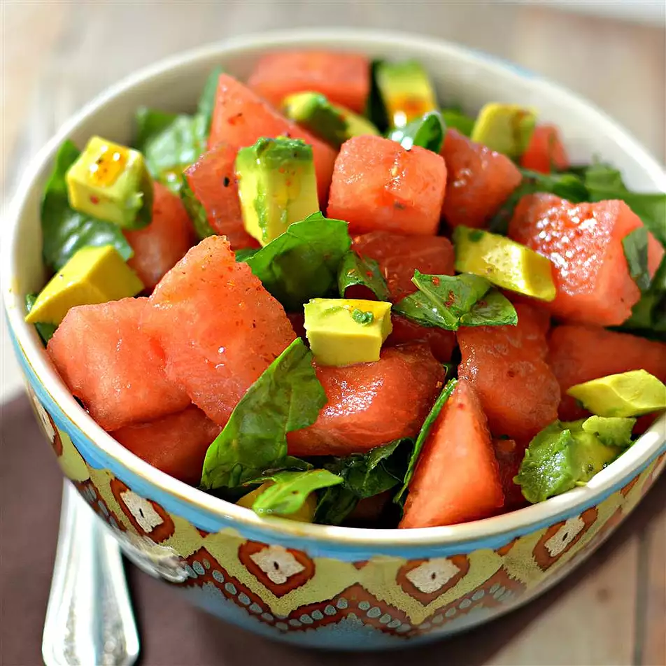

Avocado Watermelon Salad

This is a very healthy, yet delightfully different salad.
A flavorful addition could be small slices of red onion.
Shop for watermelon carefully.
Old-fashioned seeded watermelons are best (and sweeter too!)
Ingredients
- 4 cups cubed watermelon
- 4 cups fresh baby spinach, torn
- 2 large avocados - peeled, pitted, and diced
- ¼ cup walnut oil
- ¼ cup olive oiln
- 1 lime, juiced
- ½ teaspoon sweet paprika
Steps
- Combine watermelon, spinach,
and avocados together in a bowl
- Whisk walnut oil, olive oil, lime juice,
and paprika together in a bowl;
pour over watermelon mixture. Toss to coat.